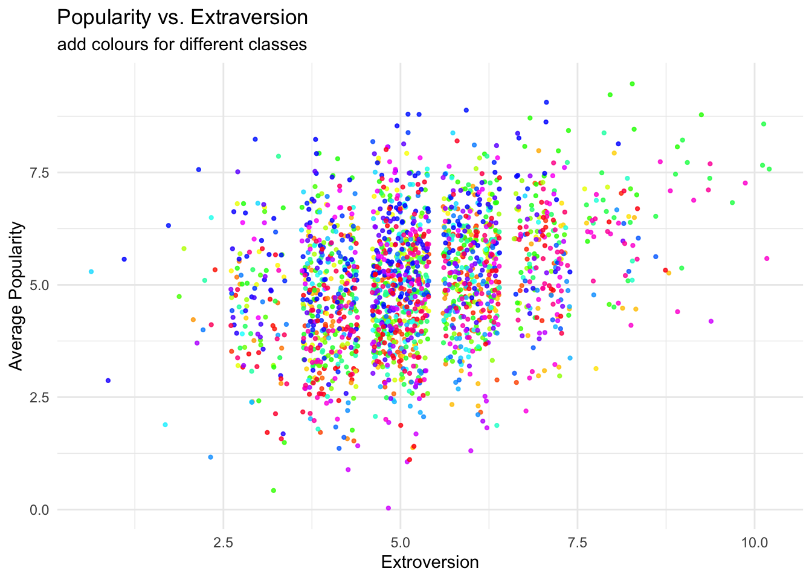
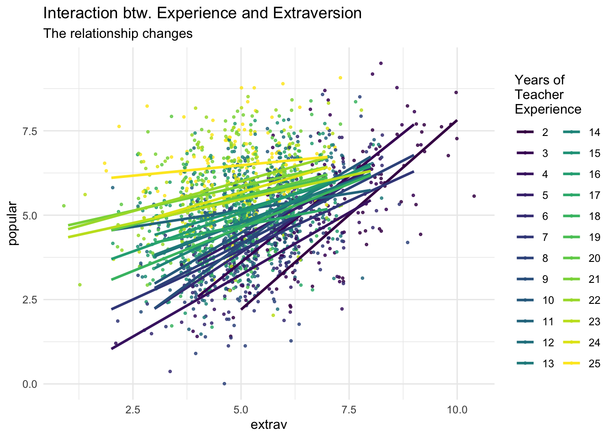

Our sixth class meeting will focus on Chapter 8 and Chapter 9 of Handbook of Regression Modeling in People Analytics.
The Skinny
Hierarchical models represent an advance on more standard linear and generalized linear models with the recognition that data have hierarchical forms of organization with varying degrees of freedom for the predictors. These models can, generically, be combined with techniques that we have already learned to expand the range of our toolkit. Since we left last week off with ordered models, they will first occupy our attention.
Hierarchical Models and SEM
Hierarchical Models
To examine a hierarchical model, I am going to choose some interesting data on popularity. A description appears below; these data come from an Intro to Multilevel Analysis.
Popularity Data
Though the data are technically ordered, this feature is not exploited to build a hierarchical ordered regression model, though it could be done. Instead, the outcome of interest is an average of ordered scales.
pupil class extrav sex
Min. : 1.00 Min. : 1.00 Min. : 1.000 Min. :0.0000
1st Qu.: 6.00 1st Qu.: 25.00 1st Qu.: 4.000 1st Qu.:0.0000
Median :11.00 Median : 51.00 Median : 5.000 Median :1.0000
Mean :10.65 Mean : 50.37 Mean : 5.215 Mean :0.5055
3rd Qu.:16.00 3rd Qu.: 76.00 3rd Qu.: 6.000 3rd Qu.:1.0000
Max. :26.00 Max. :100.00 Max. :10.000 Max. :1.0000
texp popular
Min. : 2.00 Min. :0.000
1st Qu.: 8.00 1st Qu.:4.100
Median :15.00 Median :5.100
Mean :14.26 Mean :5.076
3rd Qu.:20.00 3rd Qu.:6.000
Max. :25.00 Max. :9.500
# A tibble: 6 × 6
pupil class extrav sex texp popular
<dbl> <dbl> <dbl> <dbl+lbl> <dbl> <dbl>
1 1 1 5 1 [girl] 24 6.3
2 2 1 7 0 [boy] 24 4.9
3 3 1 4 1 [girl] 24 5.3
4 4 1 3 1 [girl] 24 4.7
5 5 1 5 1 [girl] 24 6
6 6 1 4 0 [boy] 24 4.7
A plot of the relationship of interest
```{r}ggplot(data = popular2data,aes(x = extrav,y = popular,col = class))+#to add the colours for different classesgeom_point(size =0.8,alpha = .8,position ="jitter")+#to add some random noise for plotting purposestheme_minimal()+theme(legend.position ="none")+scale_color_gradientn(colours =rainbow(100))+labs(title ="Popularity vs. Extraversion",subtitle ="add colours for different classes",x ="Extroversion",y ="Average Popularity")```

With the lines
```{r}ggplot(data = popular2data,aes(x = extrav,y = popular,col = class,group = class))+#to add the colours for different classesgeom_point(size =1.2,alpha = .8,position ="jitter")+#to add some random noise for plotting purposestheme_minimal()+theme(legend.position ="none")+scale_color_gradientn(colours =rainbow(100))+geom_smooth(method = lm,se =FALSE,size = .5, alpha = .8)+# to add regression linelabs(title ="Popularity vs. Extraversion",subtitle ="add colours for different classes and regression lines",x ="Extroversion",y ="Average Popularity")```
`geom_smooth()` using formula 'y ~ x'
A regression
```{r}ggplot(data = popular2data, aes(x = extrav,y = popular, col =as.factor(sex)))+geom_point(size =1, alpha = .7, position ="jitter")+geom_smooth(method = lm,se = T, size =1.5, linetype =1, alpha = .7)+theme_minimal()+labs(title ="Popularity and Extraversion for 2 Genders", subtitle ="The linear relationship between the two is similar for both genders")+scale_color_manual(name =" Gender",labels =c("Boys", "Girls"),values =c("lightblue", "pink"))```
`geom_smooth()` using formula 'y ~ x'
A model with random intercepts
```{r, warning=FALSE, message=FALSE}library(lme4)options(scipen=7)library(lmerTest)model1 <-lmer(formula = popular ~1+ sex + extrav + (1|class), data = popular2data)summary(model1)```
Linear mixed model fit by REML. t-tests use Satterthwaite's method [
lmerModLmerTest]
Formula: popular ~ 1 + sex + extrav + (1 | class)
Data: popular2data
REML criterion at convergence: 4948.3
Scaled residuals:
Min 1Q Median 3Q Max
-3.2091 -0.6575 -0.0044 0.6732 2.9755
Random effects:
Groups Name Variance Std.Dev.
class (Intercept) 0.6272 0.7919
Residual 0.5921 0.7695
Number of obs: 2000, groups: class, 100
Fixed effects:
Estimate Std. Error df t value Pr(>|t|)
(Intercept) 2.14096 0.11729 390.76822 18.25 <2e-16 ***
sex 1.25300 0.03743 1926.69933 33.48 <2e-16 ***
extrav 0.44161 0.01616 1956.77498 27.33 <2e-16 ***
---
Signif. codes: 0 '***' 0.001 '**' 0.01 '*' 0.05 '.' 0.1 ' ' 1
Correlation of Fixed Effects:
(Intr) sex
sex -0.100
extrav -0.705 -0.085
Though in this case, we probably do not need them but p-values can be obtained from lmerTest. The standard lme4 summary does not have them.
Now let’s add a second-level predictor. Teacher experience does not vary within a given classroom, only across the 100 classrooms. Let’s look at this model.
Linear mixed model fit by REML. t-tests use Satterthwaite's method [
lmerModLmerTest]
Formula: popular ~ 1 + sex + extrav + texp + (1 | class)
Data: popular2data
REML criterion at convergence: 4885
Scaled residuals:
Min 1Q Median 3Q Max
-3.1745 -0.6491 -0.0075 0.6705 3.0078
Random effects:
Groups Name Variance Std.Dev.
class (Intercept) 0.2954 0.5435
Residual 0.5920 0.7694
Number of obs: 2000, groups: class, 100
Fixed effects:
Estimate Std. Error df t value Pr(>|t|)
(Intercept) 0.809766 0.169993 226.431473 4.764 0.0000034 ***
sex 1.253800 0.037290 1948.303018 33.623 < 2e-16 ***
extrav 0.454431 0.016165 1954.889209 28.112 < 2e-16 ***
texp 0.088407 0.008764 101.627424 10.087 < 2e-16 ***
---
Signif. codes: 0 '***' 0.001 '**' 0.01 '*' 0.05 '.' 0.1 ' ' 1
Correlation of Fixed Effects:
(Intr) sex extrav
sex -0.040
extrav -0.589 -0.090
texp -0.802 -0.036 0.139
More experienced teachers lead to higher reported average popularity.
Random slopes
```{r, message=FALSE, warning=FALSE}model3 <-lmer(formula = popular ~1+ sex + extrav + texp + (1+ sex + extrav | class),data = popular2data, control=lmerControl(optCtrl=list(maxfun=100000) ))summary(model3)```
Linear mixed model fit by REML. t-tests use Satterthwaite's method [
lmerModLmerTest]
Formula: popular ~ 1 + sex + extrav + texp + (1 + sex + extrav | class)
Data: popular2data
Control: lmerControl(optCtrl = list(maxfun = 100000))
REML criterion at convergence: 4833.3
Scaled residuals:
Min 1Q Median 3Q Max
-3.1643 -0.6554 -0.0246 0.6711 2.9570
Random effects:
Groups Name Variance Std.Dev. Corr
class (Intercept) 1.342020 1.15846
sex 0.002404 0.04903 -0.39
extrav 0.034742 0.18639 -0.88 -0.09
Residual 0.551435 0.74259
Number of obs: 2000, groups: class, 100
Fixed effects:
Estimate Std. Error df t value Pr(>|t|)
(Intercept) 0.758511 0.197316 181.050469 3.844 0.000167 ***
sex 1.250810 0.036942 986.050567 33.859 < 2e-16 ***
extrav 0.452854 0.024645 96.208501 18.375 < 2e-16 ***
texp 0.089520 0.008618 101.321705 10.388 < 2e-16 ***
---
Signif. codes: 0 '***' 0.001 '**' 0.01 '*' 0.05 '.' 0.1 ' ' 1
Correlation of Fixed Effects:
(Intr) sex extrav
sex -0.062
extrav -0.718 -0.066
texp -0.684 -0.039 0.089
optimizer (nloptwrap) convergence code: 0 (OK)
Model failed to converge with max|grad| = 0.00597328 (tol = 0.002, component 1)
Examining the Model
```{r}ranova(model3)```
boundary (singular) fit: see help('isSingular')
ANOVA-like table for random-effects: Single term deletions
Model:
popular ~ sex + extrav + texp + (1 + sex + extrav | class)
npar logLik AIC LRT Df
<none> 11 -2416.6 4855.3
sex in (1 + sex + extrav | class) 8 -2417.4 4850.8 1.513 3
extrav in (1 + sex + extrav | class) 8 -2441.9 4899.8 50.507 3
Pr(>Chisq)
<none>
sex in (1 + sex + extrav | class) 0.6792
extrav in (1 + sex + extrav | class) 0.00000000006232 ***
---
Signif. codes: 0 '***' 0.001 '**' 0.01 '*' 0.05 '.' 0.1 ' ' 1
The random effect associated with sex is not close to significance.
A Crossed-Effects Model
```{r}model5<-lmer(formula = popular ~1+ sex + extrav + texp+ extrav*texp + (1+ extrav | class), data = popular2data)summary(model5)```
Linear mixed model fit by REML. t-tests use Satterthwaite's method [
lmerModLmerTest]
Formula: popular ~ 1 + sex + extrav + texp + extrav * texp + (1 + extrav |
class)
Data: popular2data
REML criterion at convergence: 4780.5
Scaled residuals:
Min 1Q Median 3Q Max
-3.12872 -0.63857 -0.01129 0.67916 3.05006
Random effects:
Groups Name Variance Std.Dev. Corr
class (Intercept) 0.478639 0.69184
extrav 0.005409 0.07355 -0.64
Residual 0.552769 0.74348
Number of obs: 2000, groups: class, 100
Fixed effects:
Estimate Std. Error df t value Pr(>|t|)
(Intercept) -1.209607 0.271901 109.345831 -4.449 2.09e-05 ***
sex 1.240698 0.036233 1941.077365 34.243 < 2e-16 ***
extrav 0.803578 0.040117 72.070164 20.031 < 2e-16 ***
texp 0.226197 0.016807 98.507109 13.458 < 2e-16 ***
extrav:texp -0.024728 0.002555 71.986847 -9.679 1.15e-14 ***
---
Signif. codes: 0 '***' 0.001 '**' 0.01 '*' 0.05 '.' 0.1 ' ' 1
Correlation of Fixed Effects:
(Intr) sex extrav texp
sex 0.002
extrav -0.867 -0.065
texp -0.916 -0.047 0.801
extrav:texp 0.773 0.033 -0.901 -0.859
A Picture
```{r}ggplot(data = popular2data,aes(x = extrav, y = popular, col =as.factor(texp)))+ viridis::scale_color_viridis(discrete =TRUE)+geom_point(size = .7,alpha = .8, position ="jitter")+geom_smooth(method = lm,se =FALSE,size =1,alpha = .4)+theme_minimal()+labs(title ="Interaction btw. Experience and Extraversion", subtitle ="The relationship changes", col ="Years of\nTeacher\nExperience")```
`geom_smooth()` using formula 'y ~ x'

Structural Equations Models
A few weeks ago, Jack mentioned the use of principal components as a means for combining collinear variables. There is a more general language for describing models of this sort. The following example will play off of work I am currently finishing up with Elliot Maltz and a co-author.
First, the data.
```{r}library(lavaan)```
This is lavaan 0.6-12
lavaan is FREE software! Please report any bugs.
Warning in lav_model_vcov(lavmodel = lavmodel, lavsamplestats = lavsamplestats, : lavaan WARNING:
The variance-covariance matrix of the estimated parameters (vcov)
does not appear to be positive definite! The smallest eigenvalue
(= 6.642114e-18) is close to zero. This may be a symptom that the
model is not identified.

Social Influence